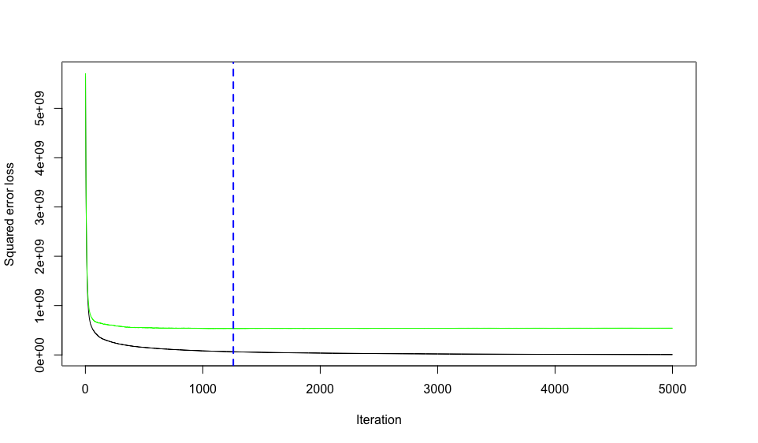
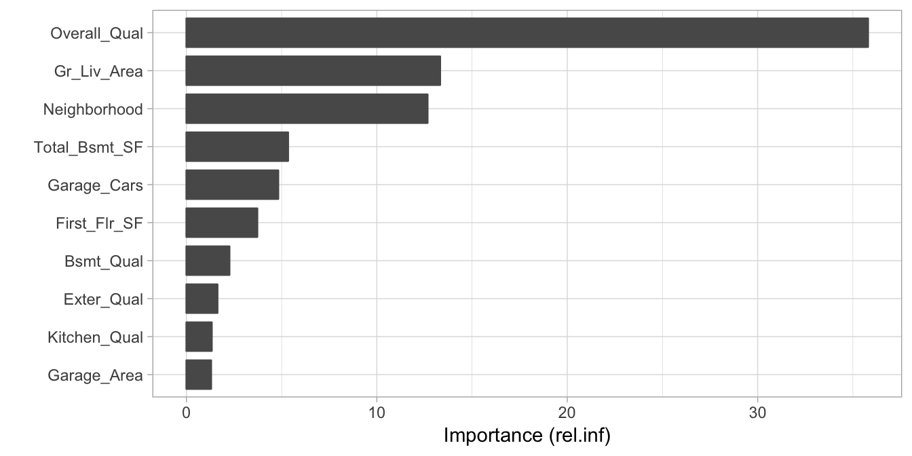
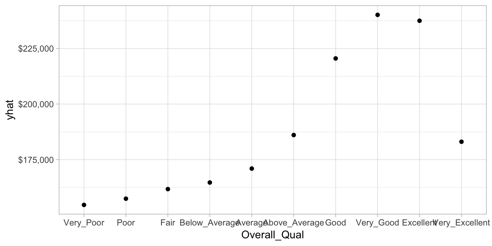
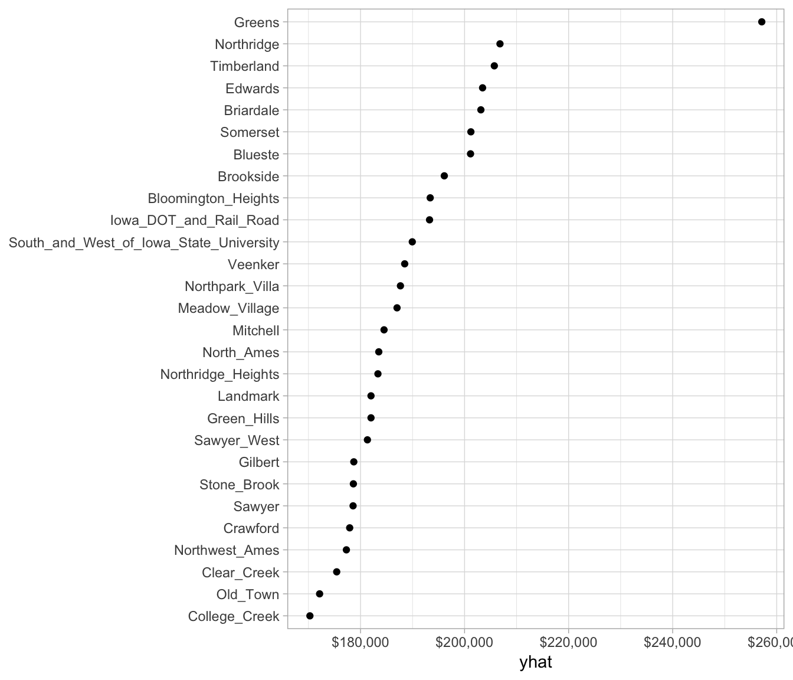

Chapter 10 Gradient Boosting Machines
Gradient boosted machines (GBMs) are an extremely popular machine learning algorithm that have proven successful across many domains and is one of the leading methods for winning Kaggle competitions. Whereas random forests (Chapter 9) build an ensemble of deep independent trees, GBMs build an ensemble of shallow and weak successive trees with each tree learning and improving on the previous. When combined, these many weak successive trees produce a powerful “committee” that are often hard to beat with other algorithms. This chapter will cover the fundamentals to understanding and implementing GBMs.
10.1 Prerequisites
For this chapter we’ll use the following packages:
library(rsample) # data splitting
library(gbm)
library(caret)
library(vip)
library(pdp)To illustrate the various concepts we’ll continue focusing on the Ames Housing data (regression); however, at the end of the chapter we’ll also fit a GBM model to the employee attrition data (classification).
# Create training (70%) and test (30%) sets for the AmesHousing::make_ames() data.
# Use set.seed for reproducibility
set.seed(123)
ames_split <- initial_split(AmesHousing::make_ames(), prop = .7)
ames_train <- training(ames_split)
ames_test <- testing(ames_split)10.2 The basic idea
Thus far, we have discussed several supervised machine learning algorithms that are founded on a single predictive model such as linear and logistic regression (\(\S\)5, \(\S\)6), regularized regression (\(\S\)7), and multivariate adaptive regression splines (\(\S\)8). We have also introduced other approaches such as bagging and random forests (\(\S\)9) that are built on the idea of building an ensemble of models where each individual model predicts the outcome and then the ensemble simply averages the predicted values. The family of boosting methods is based on a different, constructive strategy of ensemble formation.
The main idea of boosting is to add new models to the ensemble sequentially. At each particular iteration, a new weak, base-learner model is trained with respect to the error of the whole ensemble learnt so far.

Figure 10.1: Sequential ensemble approach.
Let’s discuss each component of the previous sentence in closer detail because they are important.
Base-learning models: Boosting is a framework that iteratively improves any weak learning model. Many gradient boosting applications allow you to “plug in” various classes of weak learners at your disposal. In practice however, boosted algorithms almost always use decision trees as the base-learner. Consequently, this chapter will discuss boosting in the context of decision trees.
Training weak models: A weak model is one whose error rate is only slightly better than random guessing. The idea behind boosting is that each sequential model builds a simple weak model to slightly improve the remaining errors. With regards to decision trees, shallow trees represent a weak learner. Commonly, trees with only 1-6 splits are used. Combining many weak models (versus strong ones) has a few benefits:
- Speed: Constructing weak models is computationally cheap.
- Accuracy improvement: Weak models allow the algorithm to learn slowly; making minor adjustments in new areas where it does not perform well. In general, statistical approaches that learn slowly tend to perform well.
- Avoids overfitting: Due to making only small incremental improvements with each model in the ensemble, this allows us to stop the learning process as soon as overfitting has been detected (typically by using cross-validation).
Sequential training with respect to errors: Boosted trees are grown sequentially; each tree is grown using information from previously grown trees. The basic algorithm for boosted regression trees can be generalized to the following where x represents our features and y represents our response:
- Fit a decision tree to the data: \(F_1(x) = y\),
- We then fit the next decision tree to the residuals of the previous: \(h_1(x) = y - F_1(x)\),
- Add this new tree to our algorithm: \(F_2(x) = F_1(x) + h_1(x)\),
- Fit the next decision tree to the residuals of \(F_2\): \(h_2(x) = y - F_2(x)\),
- Add this new tree to our algorithm: \(F_3(x) = F_2(x) + h_1(x)\),
- Continue this process until some mechanism (i.e. cross validation) tells us to stop.
The basic algorithm for boosted decision trees can be generalized to the following where the final model is simply a stagewise additive model of b individual trees:
\[ f(x) = \sum^B_{b=1}f^b(x) \tag{1} \]
To illustrate the behavior, assume the following x and y observations. The blue sine wave represents the true underlying function and the points represent observations that include some irriducible error (noise). The boosted prediction illustrates the adjusted predictions after additional sequential trees are added to the algorithm. Initially, there are large errors which the boosted algorithm improves upon immediately but as the predictions get closer to the true underlying function you see each additional tree make small improvements in different areas across the feature space where errors remain. If enough trees are added, the algorithm can overfit. As Figure ?? shows, the predicted values approximately converge to the true underlying function at around 50-100 iterations; however, we definitely see that at larger iterations (500-1000) the predicted value becomes highly variable to the noise in the data.

Figure 10.2: Boosted regression tree predictions illustrating how gradient boosted trees sequentially reduce the error.
10.3 Gradient descent
Many algorithms, including decision trees, focus on minimizing the residuals and, therefore, emphasize the MSE loss function. The algorithm discussed above outlines the approach of sequentially fitting regression trees to minimize the errors. This specific approach is how gradient boosting minimizes the mean squared error (MSE) loss function. However, often we wish to focus on other loss functions such as mean absolute error (MAE) or to be able to apply the method to a classification problem with a loss function such as deviance or logloss. The name gradient boosting machine comes from the fact that this procedure can be generalized to loss functions other than MSE.
Gradient boosting is considered a gradient descent algorithm. Gradient descent is a very generic optimization algorithm capable of finding optimal solutions to a wide range of problems. The general idea of gradient descent is to tweak parameters iteratively in order to minimize a loss function. Suppose you are a downhill skier racing your friend. A good strategy to beat your friend to the bottom is to take the path with the steepest slope. This is exactly what gradient descent does - it measures the local gradient of the loss function for a given set of parameters (\(\Theta\)) and takes steps in the direction of the descending gradient. Once the gradient is zero, we have reached the minimum.
Figure 10.3: Gradient descent is the process of gradually decreasing the cost function (i.e. MSE) by tweaking parameters iteratively until you have reached a minimum.
Gradient descent can be performed on any loss function that is differentiable. Consequently, this allows GBMs to optimize different loss functions as desired (see Friedman, Hastie, and Tibshirani (2001), p. 360 for common loss functions). An important parameter in gradient descent is the size of the steps which is determined by the learning rate. If the learning rate is too small, then the algorithm will take many iterations to find the minimum. On the other hand, if the learning rate is too high, you might jump across the minimum and end up further away than when you started.
Figure 10.4: A learning rate that is too small will require many iterations to find the minimum. A learning rate too big may jump over the minimum.
Moreover, not all cost functions are convex (bowl shaped). There may be local minimas, plateaus, and other irregular terrain of the loss function that makes finding the global minimum difficult. Stochastic gradient descent can help us address this problem by sampling a fraction of the training observations (typically without replacement) and growing the next tree using that subsample. This makes the algorithm faster but the stochastic nature of random sampling also adds some random nature in descending the loss function gradient. Although this randomness does not allow the algorithm to find the absolute global minimum, it can actually help the algorithm jump out of local minima and off plateaus and get near the global minimum.
Figure 10.5: Stochastic gradient descent will often find a near-optimal solution by jumping out of local minimas and off plateaus.
As we’ll see in the next section, there are several hyperparameter tuning options that allow us to address how we approach the gradient descent of our loss function.
10.4 Fitting a basic GBM
# for reproducibility
set.seed(123)
# train GBM model
gbm_mod1 <- gbm(
formula = Sale_Price ~ .,
distribution = "gaussian",
data = ames_train,
n.trees = 10000,
interaction.depth = 1,
shrinkage = 0.001,
cv.folds = 5,
n.cores = NULL, # will use all cores by default
verbose = FALSE
)
print(gbm_mod1)
## gbm(formula = Sale_Price ~ ., distribution = "gaussian", data = ames_train,
## n.trees = 10000, interaction.depth = 1, shrinkage = 0.001,
## cv.folds = 5, verbose = FALSE, n.cores = NULL)
## A gradient boosted model with gaussian loss function.
## 10000 iterations were performed.
## The best cross-validation iteration was 10000.
## There were 80 predictors of which 45 had non-zero influence.# get MSE and compute RMSE
sqrt(min(gbm_mod1$cv.error))
## [1] 33079.61
# plot loss function as a result of n trees added to the ensemble
gbm.perf(gbm_mod1, method = "cv")
10.5 Tuning
# for reproducibility
set.seed(123)
# train GBM model
gbm_mod2 <- gbm(
formula = Sale_Price ~ .,
distribution = "gaussian",
data = ames_train,
n.trees = 5000,
interaction.depth = 3,
shrinkage = 0.1,
cv.folds = 5,
n.cores = NULL, # will use all cores by default
verbose = FALSE
)
# find index for n trees with minimum CV error
min_MSE <- which.min(gbm_mod2$cv.error)
# get MSE and compute RMSE
sqrt(gbm_mod2$cv.error[min_MSE])
## [1] 23813.34
# plot loss function as a result of n trees added to the ensemble
gbm.perf(gbm_mod2, method = "cv")
gbm_grid <- expand.grid(
interaction.depth = seq(1, 5, by = 2),
shrinkage = c(.01, .1, .3),
n.minobsinnode = c(5, 10, 15),
n.trees = 5000
)This grid search took 51 minutes to complete.
# create train() parameters
features <- subset(ames_train, select = -Sale_Price) %>% as.data.frame()
response <- ames_train$Sale_Price
kfold <- trainControl(method = "cv", number = 5)
# cross validated model
gbm_tune <- train(
x = features,
y = response,
method = "gbm",
distribution = "gaussian",
metric = "RMSE",
tuneGrid = gbm_grid,
trControl = kfold,
verbose = FALSE
)
# plot results
ggplot(gbm_tune)
# best model
gbm_tune$bestTune
## n.trees interaction.depth shrinkage n.minobsinnode
## 7 5000 5 0.01 5Minimum RMSE was $22,424
10.6 Feature Interpretation
vip(gbm_final_fit)
# PDP plot
gbm_pdp <- gbm_final_fit %>%
partial(pred.var = "Gr_Liv_Area", n.trees = gbm_final_fit$n.trees, grid.resolution = 100) %>%
autoplot(rug = TRUE, train = ames_train) +
ggtitle("PDP plot") +
scale_y_continuous(labels = scales::dollar)
# ICE curves
gbm_ice <- gbm_final_fit %>%
partial(pred.var = "Gr_Liv_Area", n.trees = gbm_final_fit$n.trees, grid.resolution = 100, ice = TRUE) %>%
autoplot(rug = TRUE, train = ames_train, alpha = .1, center = TRUE) +
ggtitle("Centered ICE curves") +
scale_y_continuous(labels = scales::dollar)
gridExtra::grid.arrange(gbm_pdp, gbm_ice, nrow = 1)


10.7 Attrition data
# get attrition data
df <- rsample::attrition %>% dplyr::mutate_if(is.ordered, factor, ordered = FALSE)
# Create training (70%) and test (30%) sets for the rsample::attrition data.
# Use set.seed for reproducibility
set.seed(123)
churn_split <- initial_split(df, prop = .7, strata = "Attrition")
churn_train <- training(churn_split)
churn_test <- testing(churn_split)
# create a tuning grid
gbm_grid <- expand.grid(
interaction.depth = seq(1, 5, by = 2),
shrinkage = c(.01, .1, .3),
n.minobsinnode = c(5, 10, 15),
n.trees = c(5000, 10000)
)
# create train() parameters
features <- subset(churn_train, select = -Attrition) %>% as.data.frame()
response <- churn_train$Attrition
kfold <- trainControl(method = "cv", number = 10)
# cross validated model
gbm_churn <- train(
x = features,
y = response,
method = "gbm",
distribution = "bernoulli",
tuneGrid = gbm_grid,
trControl = kfold,
verbose = FALSE
)
gbm_churn$bestTune
## n.trees interaction.depth shrinkage n.minobsinnode
## 1 5000 1 0.01 5
min(gbm_churn$results$RMSE)
## [1] 0.8718578| Min. | 1st Qu. | Median | Mean | 3rd Qu. | Max. | NA’s | |
|---|---|---|---|---|---|---|---|
| Logistic_model | 0.8058252 | 0.8455882 | 0.8640777 | 0.8639973 | 0.8843353 | 0.9126214 | 0 |
| Elastic_net | 0.8076923 | 0.8578431 | 0.8786765 | 0.8728811 | 0.8907767 | 0.9134615 | 0 |
| MARS_model | 0.8349515 | 0.8482076 | 0.8641591 | 0.8632027 | 0.8734771 | 0.8932039 | 0 |
| RF_model | 0.8269231 | 0.8557692 | 0.8627451 | 0.8622196 | 0.8734771 | 0.8823529 | 0 |
| GBM_model | 0.8461538 | 0.8592233 | 0.8743932 | 0.8748354 | 0.8902715 | 0.9019608 | 0 |
10.8 Final thoughts
10.9 Learning more
References
Friedman, Jerome, Trevor Hastie, and Robert Tibshirani. 2001. The Elements of Statistical Learning. Vol. 1. 10. Springer series in statistics New York, NY, USA: